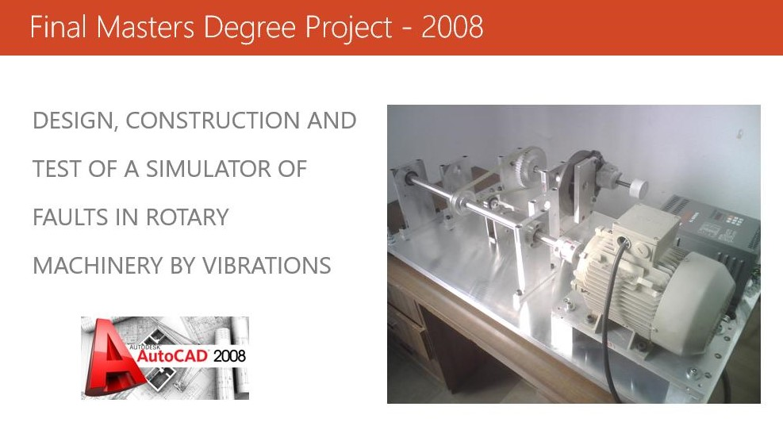
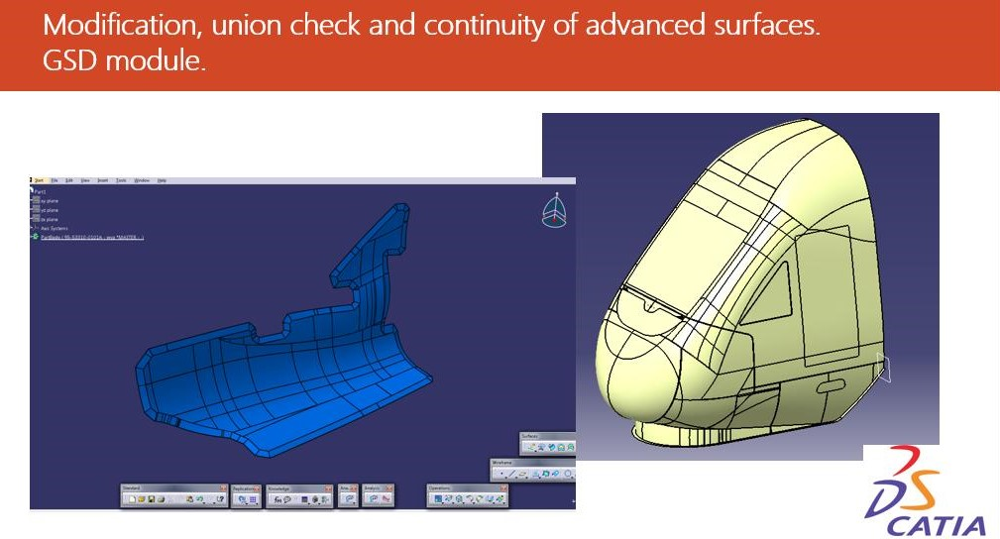
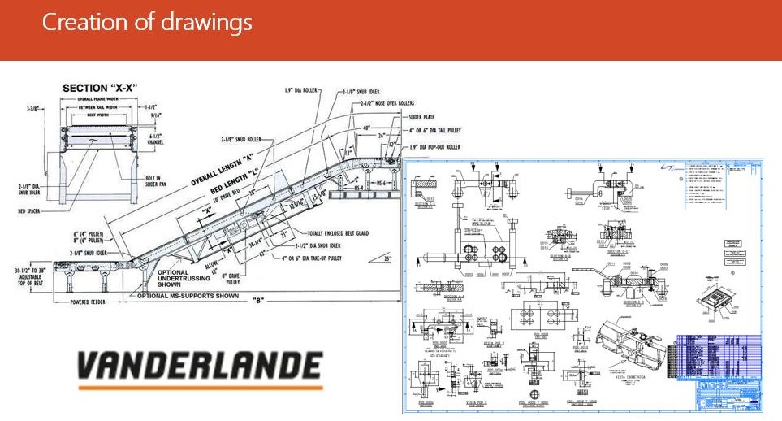
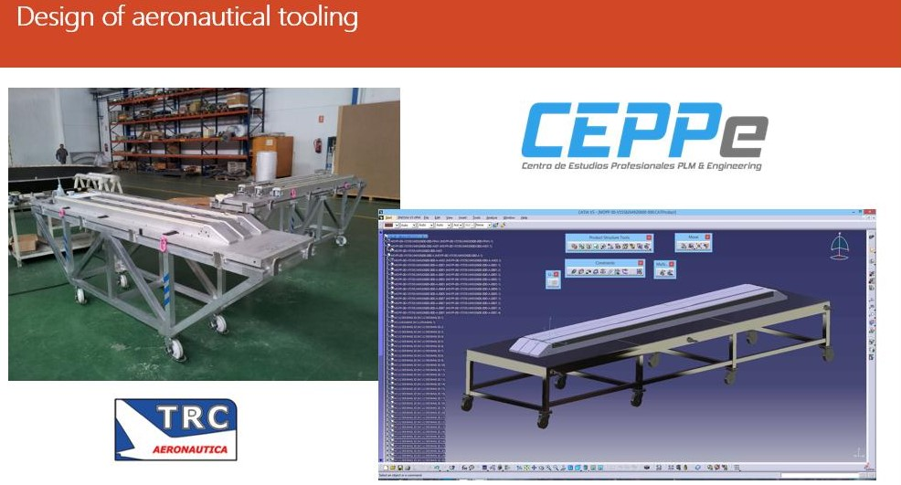
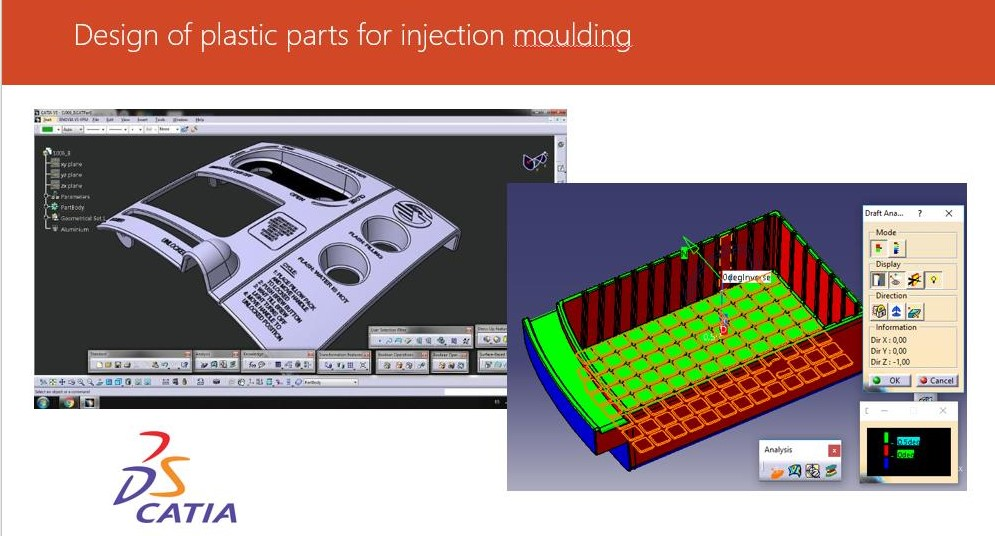
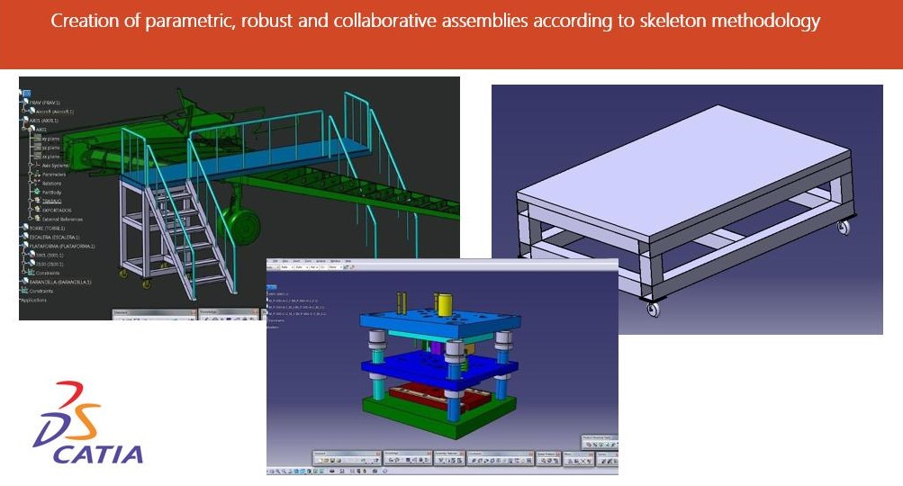
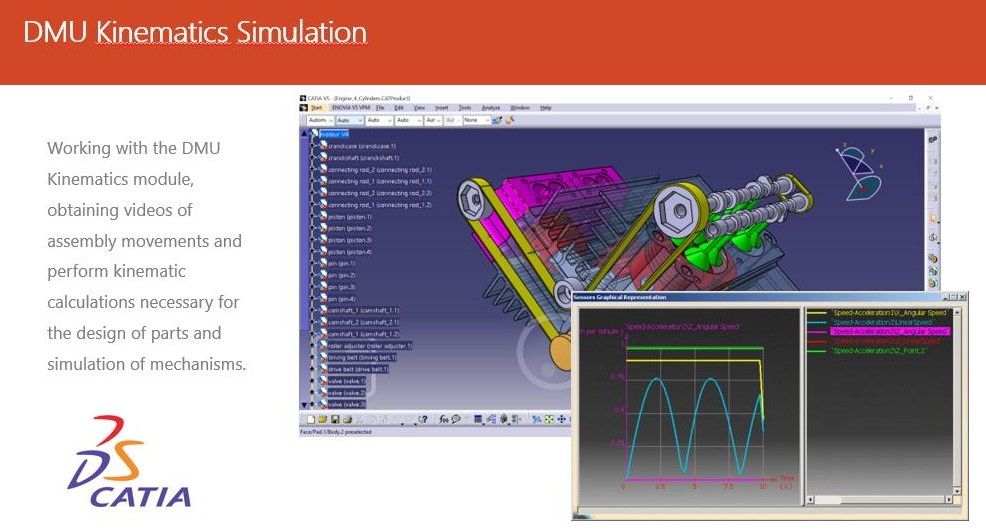
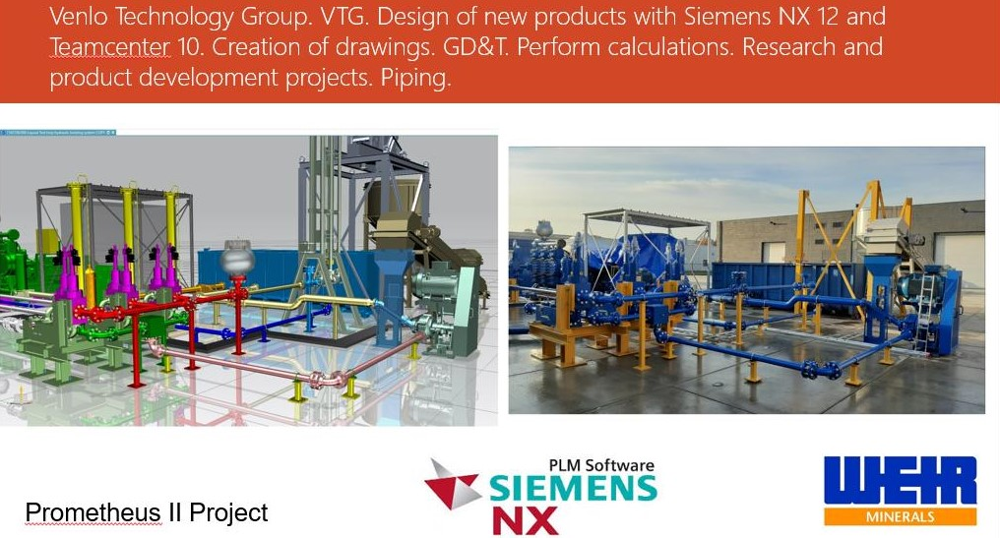

Jose Antonio Ortega
Catia V5 / NX Siemens Designer
About
I am a professionally qualified Industrial Engineer with more than 10 years experience specialized over the last three years in CAD, CAE and CAM with NX 12 and CATIA V5. I have achieved a Master's Degree in the use of this CAD tool and the official certification. During this period I have developed good methodical and organisational skills, confidency, able working independently or as part of a team.
Skills
NX Siemens
Catia V5
CAD
Portfolio








Contact Me
Viersen, Germany
Phone: +31 612 517 855
Email: padantro11@hotmail.com